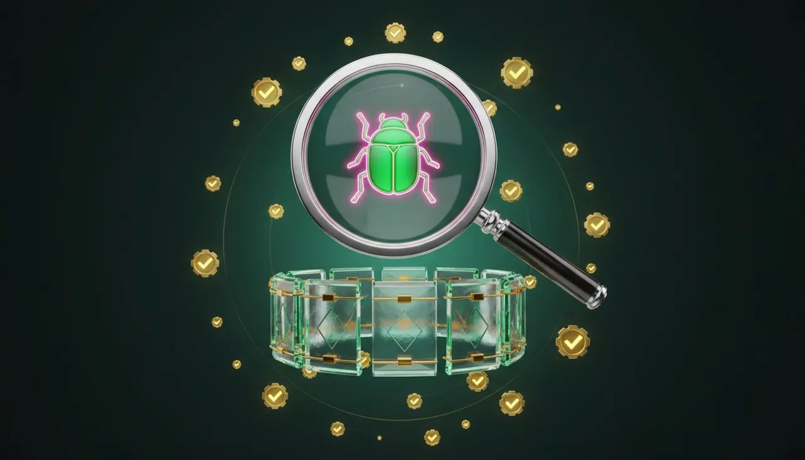
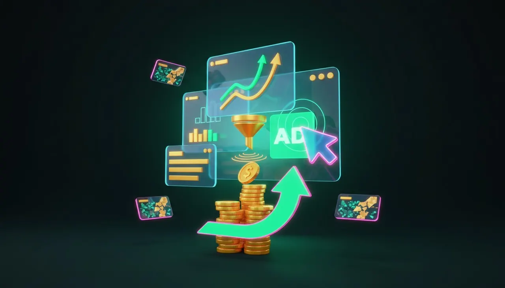
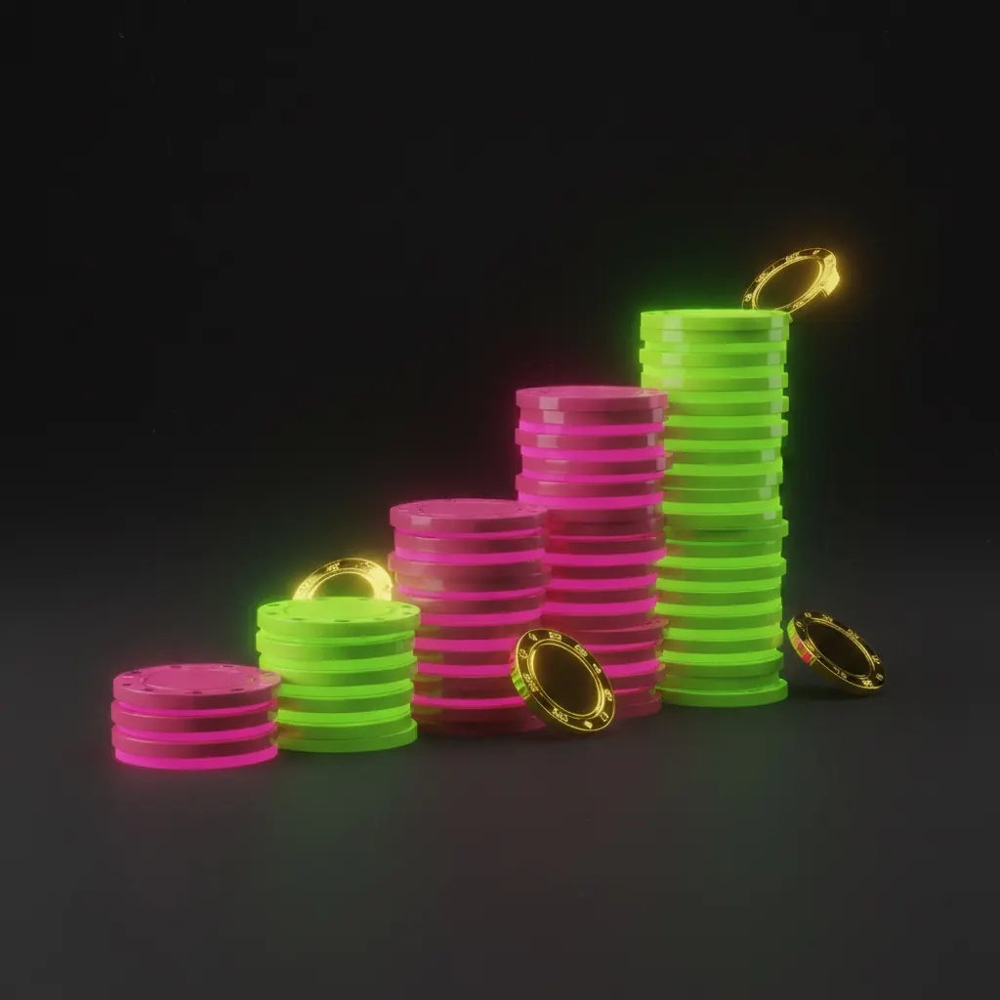
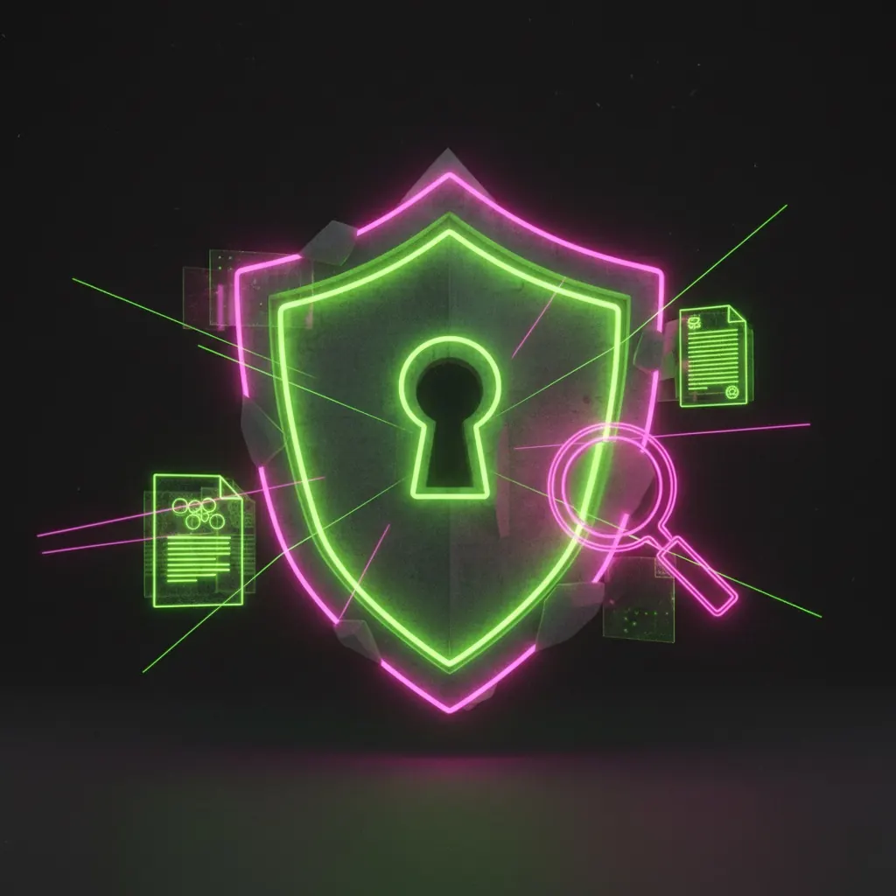

Блог SpinHire
Зарплаты, релокация, карьерные треки в гемблинге. Пишем как есть — цифры вместо воды.

Дата-инженер в iGaming: зачем казино своя платформа данных
Каждый спин — событие, в пике их десятки тысяч в секунду. Что дата-инженер строит для CRM, антифрода и регулятора, стек Kafka/Airflow/dbt, вилки €1.6–13K по грейдам и почему сюда берут без опыта в гемблинге.
Читать →
Head of Affiliates: как вырасти из аффилейт-менеджера
Руководитель партнёрки отвечает не за пул партнёров, а за P&L канала: рынки, модели выплат, фрод и команда. Вилки €2.5–18K по регионам, структура бонуса от NGR и три вещи, которые реально ускоряют путь в Head.
Читать →
AML-офицер в iGaming: зарплаты и вход в профессию
Роль, без которой не выдают лицензию: чем AML отличается от KYC, кто такой MLRO и почему его фамилия в лицензионном досье, вилки €2.2–12K по грейдам и регионам, сертификации ICA и ACAMS, три маршрута входа.
Читать →
Работа на Мальте в iGaming: зарплаты, налоги, что остаётся
348 вакансий, вилки по ролям для острова, прогрессивный налог и 15% по HQP для топов, аренда и стоимость жизни 2026, net на руки в сравнении с Лимассолом и Варшавой.
Читать →
Работа в Ереване: iGaming-рынок Армении
Единственный хаб региона, где индустрия выросла как продукт, а не бэкофис: платформенные провайдеры, вилки от €700 до €6.2K, налоги для контрактора и стоимость жизни.
Читать →
SEO в гемблинге: зарплаты и вход в нишу
Самая конкурентная выдача в интернете: ссылочные бюджеты, PBN-сетки, мультигео и фильтры. Вилки от €1.9K до €10K, оператор против партнёрки и как перейти из обычного SEO.
Читать →
Лучшие сайты вакансий iGaming в 2026 году: обзор 12 площадок
Джоб-борды, агентства, LinkedIn, Djinni, hh.ru и Telegram-каналы: сравнительная таблица, плюсы и минусы каждой площадки, как искать эффективно и чего опасаться.
Читать →
Из саппорта в тимлиды: карьера и зарплата
Путь agent → senior → shift lead → team lead → head of support: сроки, требования, KPI (SLA, CSAT) и вилки с ростом зарплаты в 2-3 раза.
Читать →
Бонус-менеджер казино: экономика бонусов
Кто считает bonus cost и его долю в GGR: дизайн бонусов, вейджер, борьба с абьюзом и вилки по грейдам.
Читать →
Переход из IT в iGaming: что учить, а что нет
Backend, QA, data, DevOps: что переносится 1-в-1, а что доучивать — RTP, вейджер, платежи high-risk и регуляторика. Плюсы, минусы, резюме.
Читать →
LinkedIn для iGaming: как получать офферы сами
Как рекрутеры индустрии ищут кандидатов: буль-запросы, кейворды, заголовок и About, опыт под NDA, Open to Work без палева работодателю.
Читать →
Гейм-дизайнер слотов: профессия и зарплата
Концепт, механики, баланс с математиком, пайплайн студии до релиза и вилки по грейдам €1.4–11.5K.
Читать →
Варшава для iGaming-кандидата: зарплаты и виза
Какие компании держат команды в Варшаве, вилки против Кипра и Грузии, налоги, B2B vs umowa o pracę, легализация для не-EU.
Читать →
Продакт-менеджер в iGaming: чем отличается
Регуляторика как ограничение фич, провайдеры игр, метрики GGR/NGR, вилки по грейдам и интервью продакта в гемблинг.
Читать →
Retention-менеджер в казино: вилки и рост
Чем отличается от CRM: метрики churn, reactivation rate, LTV, bonus cost, сегментация, переход в VIP. Вилки €1.2–10.5K.
Читать →
KYC-специалист: вход в комплаенс iGaming
Проверка документов, SoF/SoW-чеки, EDD. Почему это входная точка без опыта, вилки и трек KYC → AML → Compliance Manager.
Читать →
Математик игровых слотов: зарплата 2026
RTP, волатильность, hit frequency, максвин: как устроена математика слота, вилки по грейдам и вход из чистой математики.
Читать →
Трейдер в беттинге: как считают коэффициенты
Live против prematch, риск-менеджмент, вилки по грейдам €1.8–11K и как войти в профессию трейдера или одсмейкера без опыта.
Читать →
Резюме для iGaming: что писать, а что убить
Структура под индустрию, метрики вместо обязанностей, ключевые слова под ATS, живой пример блока опыта и чек-лист перед откликом.
Читать →
Аналитик данных в казино: GGR, NGR и вилки 2026
Метрики GGR/NGR/RTP/LTV, стек SQL+Python+BI, вилки по грейдам €1.4–9K и чем аналитика казино отличается от продуктовой.
Читать →
Рекрутер в iGaming: дефицит HR и зарплаты
Почему индустрии не хватает HR, как ищут редкие роли, вилки рекрутера и HRBP €1.4–9K, агентства против inhouse.
Читать →
Удалёнка в iGaming: кто платит в евро
Какие роли реально удалённые, кто платит в EUR и USDT, контракт B2B против штата, налоги и таймзоны — вилки 2026 года.
Читать →
Какой английский нужен для iGaming: B1–C1 по ролям
B1 хватит саппорту, C1 обязателен VIP и комплаенсу. Вилки по грейдам, типовые вопросы собеса и мини-глоссарий индустрии.
Читать →
Платежи и антифрод в казино: зарплаты выше рынка
Payments Manager, Fraud Analyst, Chargeback Specialist: незаметные роли с вилками €2–9K и вход из банка или финтеха.
Читать →
Аффилейт-менеджер: зарплата и карьера
CPA, RevShare и гибрид, ключевые KPI, вилки €1.2–14K по грейдам и трек Junior → Head of Affiliates. Как войти без опыта.
Читать →
Собеседование в iGaming: вопросы и подготовка
Этапы найма по ролям, вопросы про отношение к гемблингу, тестовые задания и красные флаги работодателя.
Читать →
Работа в Грузии в iGaming: зарплаты и налог 1%
Тбилиси и Батуми как хаб индустрии: компании и роли, сравнение зарплат с Кипром и Мальтой, налог ИП 1% и легальность.
Читать →CRM-менеджер в онлайн-казино: retention, бонусы и €3–5K
Сегменты, триггерные цепочки, бонусный бюджет и регуляторные ограничения в рассылках. Вилки по грейдам и маршруты входа в профессию.
Читать →
QA в разработке слотов: чем отличается от обычного тестирования
Восстановление раунда, сверка выплат с матмоделью, лимиты ответственной игры и сертификация в лабораториях. Вилки по грейдам и маршруты входа.
Читать →
Медиабайер в гемблинге: сколько платят и как войти в профессию
Источники трафика, метрики CPA и ROMI, вилки по грейдам и регионам, схемы «фикс + процент от профита» и маршруты входа без опыта.
Читать →Работа на Кипре в iGaming: зарплаты, налоги, релокация в Лимассол
Non-dom, income tax и правило 60 дней, визовый маршрут, вилки по 8 ролям и сколько реально уходит на жизнь в Лимассоле.
Читать →Агент поддержки в онлайн-казино: зарплата, график, карьерный трек
Первая линия общения с игроком — и самый частый вход в индустрию. Вилки по языкам и локациям, что спросят на интервью и куда расти после саппорта.
Читать →Как попасть в iGaming без опыта: 7 ролей, куда берут новичков
Саппорт, KYC, junior VIP, контент, аффилейт-ассистент, QA и сорсинг: вилки на входе, что спросят на интервью и почему язык важнее любого сертификата.
Читать →
Зарплаты в iGaming в 2026 году: сколько платят на самом деле
Полная таблица по 20 ролям и 6 локациям: от саппорта с языками до Head of Casino. Где net, где gross, где крипта, и почему Мальта больше не главный полюс зарплат.
Читать →Релокация на Мальту: гайд для iGaming-специалиста
Виза, жильё в Слиме против Сент-Джулианса, реальные расходы на семью и что такое «мальтийский оффер» на практике.
Читать →Кто такой VIP-менеджер и почему ему платят €5K
День из жизни человека, который знает своих игроков лучше их жён. Скиллы, KPI, карьерный трек до Head of VIP.
Читать →Лимассол против Варшавы: куда ехать за iGaming-карьерой
Зарплаты, налоги, аренда, комьюнити и сколько остаётся в кармане в каждом из хабов.
Читать →
Как войти в комплаенс и AML без опыта в гемблинге
Самое дефицитное направление индустрии: сертификации, первые роли, зарплатная лестница.
Читать →Зарплата в USDT: плюсы, риски и как не попасть
Крипто-оплата в iGaming — норма или красный флаг? Разбираем контракты, курсовые риски и налоги.
Читать →